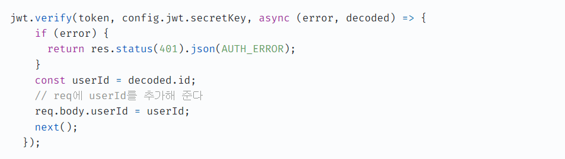

스택
- React
- Redux-toolkit
- Express
- Mongo DB
- Styled-components
Film Planet은 영화든, 드라마든, 유튜브 영상이든 좋아하는 영상에 관한 감상을 나만의 공간에 저장할 수 있는 앱입니다.
저는 넷플릭스 미드나 유튜브 노래 커버 영상을 포함해서 여러 영상을 즐겨 보는데, 다시 보고 싶은 영상을 어딘가에 기록해 두고 싶었습니다. 그런데 유튜브 보관함에서는 나만의 제목이나 코멘트를 설정할 수 없었고 블로그는 영상만을 위한 공간이 아니라 아쉬웠습니다. 그때 '내가 좋아하는 영상만을 위한 저장소를 만들어볼까?' 하는 생각이 떠올라서 앱을 만들게 되었습니다.
사용자 collection을 리턴하는 getUsers() 라는 비동기 함수를 호출한 뒤 findOne 메소드를 호출해서, 파라미터의 username이 DB에 존재하는지 확인하는 것이 목표였습니다. 그런데 "getUsers(...).findOnd is not a function"이라는 에러가 발생했습니다.
getUsers()는 비동기 함수이므로 앞에 await 키워드를 붙여서 함수가 resolve 될 때까지 기다린 다음에 값을 받아야 다음 코드를 정상적으로 실행할 수 있는데, await 키워드가 없어서 값도 아직 못 받았는데 다음 코드를 실행하니 에러가 발생한 것이었습니다.
getUsers() 앞에 await 키워드를 붙여서 값이 resolve 된 후에 다음 코드가 실행될 수 있게 수정해서 문제를 해결했습니다.
jwt 토큰 만료기한을 이틀로 설정했는데 발행한 지 얼마 되지 않아 토큰이 만료됐다는 TokenExpiredError 에러가 발생했습니다.
토큰 유효기간 값을 참조하는 변수를 콘솔에 출력해 보니 값은 정확했지만 타입이 string 타입이었습니다. 토큰과 관련된 정보는 dotenv 라이브러리를 사용해 .env 파일에 저장하고 있었는데 .env에서 가져온 값은 모두 string 타입인 것이 원인이었습니다.
.env에서 가져온 값을 number 타입으로 변환해서 사용하니 문제가 해결되었습니다.
비회원 전용 홈 컴포넌트와 로그인한 회원 전용 홈 컴포넌트는 모두 주소가 같고, asyncCheckValidLogin 라는 비동기 함수에서 로그인 여부를 확인한 뒤 둘 중 하나를 조건부 렌더링하고 있습니다. 그런데 로그인한 상태에서 로고를 눌러서 홈으로 이동하면 아주 짧은 시간 동안 비회원 전용 페이지가 보였습니다.
asyncCheckValidLogin 함수는 async 함수라 결과값을 resolve 받기 전까지는 시간이 조금 걸리므로, 그때까진 로그인되지 않았다고 판단해서 비회원 전용 컴포넌트를 렌더링하는 것이 버그의 원인이었습니다.
Promise의 status를 이용해서 문제를 해결했습니다. asyncCheckValidLogin가 리턴한 Promise의 status가 fulfilled 상태가 아닐 때는 아무것도 렌더링하지 않도록 코드를 수정했습니다.
로그인하면 그 유저와 관련된 데이터(ex: 유저가 저장한 영상)만 가져올 수 있도록 서버에 userId를 보내 달라고 요청해야 했는데, 어떤 방법으로 요청해야 하는지 고민이 됐습니다.
처음에는 jwt.verify를 이용해서 decoded.id를 리턴 받으려고 했지만, jwt.verify를 사용하려면 secretKey를 알아야 되는데 그렇게 되면 서버에서 config 파일과 .env로 안전하게 키를 관리하려는 노력이 헛되게 된다는 생각이 들었습니다. 그리고 secretKey는 서버 한 곳에만 보관하는 게 안전할 것 같아서 다른 방법을 찾아봤습니다.
기존에 만들어 두었던 토큰 인증 미들웨어를 활용하기로 했습니다. 미들웨어에서 jwt.verify로 토큰이 유효한지 인증할 때, 토큰이 유효하다면 그 토큰에 해당하는 id (처음 토큰을 만들 때 사용했던 id)를 req.body에 추가해 주었습니다.
